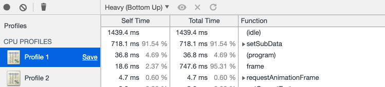
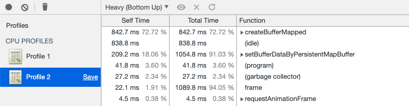
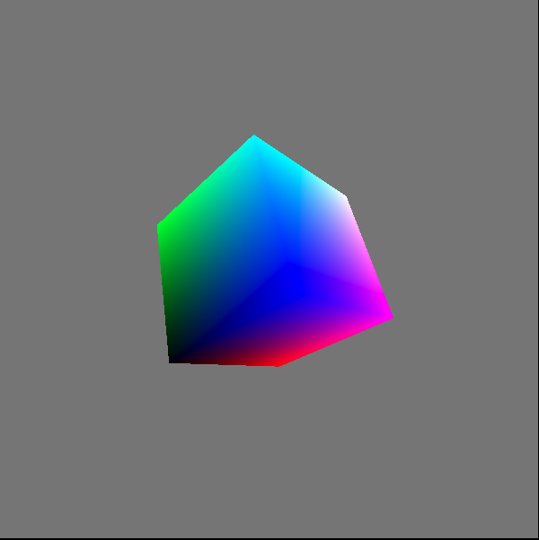

<html><head><meta charset='utf-8'><meta name='viewport' content='width=device-width, initial-scale=1'>
<meta name='applicable-device' content='pc'><meta name='keywords' content='电脑,电脑讲解,电脑技术,编程,电脑故障维修WebGPU学习（六）：学习“rotatingCube”示例' />
<script src='../../highlight/highlight.pack.js'></script>
<link rel='stylesheet' type='text/css' href='../../highlight/styles/monokai.css'/>

<link rel='stylesheet' href='../../fenxiang/dist/css/share.min.css'>
<script src='../../fenxiang/src/js/social-share.js'></script>
<script src='../../fenxiang/src/js/qrcode.js'></script>

</head><body><script>hljs.initHighlightingOnLoad();</script><script>
var system ={};  
var p = navigator.platform;       
system.win = p.indexOf('Win') == 0;  
system.mac = p.indexOf('Mac') == 0;  
system.x11 = (p == 'X11') || (p.indexOf('Linux') == 0);     
if(system.win||system.mac||system.xll){
document.write("<link href='../css/3.css' rel='stylesheet' type='text/css'>");}else{ document.write("<link href='../css/3wap.css' rel='stylesheet' type='text/css'>");}</script><script src='../../js/3.js'></script><div class='div2'><div class='heading_nav'><ul><div><li><a href='../../index.html'>首页</a></li>
</div><div onclick='hidden1()' >分享</div>
</ul></div></div>
<div id='heading_nav2'> 
<li class='row' >
<div class='social-share' data-mode='prepend'><a href='javascript:' class='social-share-icon icon-heart'></a></div></li></div><script charset='utf-8' src='../../3/js/hengfu.js'></script><script charset='utf-8' src='../../3/js/hengfu2.js'></script><hr><div class='div1'><div class='biaoti'><center>WebGPU学习（六）：学习“rotatingCube”示例</center></div><div class='banquan'>原文出处:本文由博客园博主Wonder-YYC提供。<br/>
原文连接:https://www.cnblogs.com/chaogex/p/12079739.html</div><br>
    <p>大家好，本文学习Chrome-&gt;webgpu-samplers-&gt;rotatingCube示例。</p>
<p>上一篇博文：<br />
<a href="https://www.cnblogs.com/chaogex/p/12041286.html">WebGPU学习（五）: 现代图形API技术要点和WebGPU支持情况调研</a></p>
<p>下一篇博文：<br />
<a href="https://www.cnblogs.com/chaogex/p/12081022.html">WebGPU学习（七）：学习“twoCubes”和“instancedCube”示例</a></p>
<h1 id="学习rotatingcube.ts">学习rotatingCube.ts</h1>
<p>我们已经学习了<a href="https://www.cnblogs.com/chaogex/p/11993144.html">“绘制三角形”</a>的示例，与它相比，本示例增加了以下的内容：</p>
<ul>
<li>增加一个uniform buffer object（简称为ubo），用于传输model矩阵<em>view矩阵</em>projection矩阵的结果矩阵（简称为mvp矩阵），并在每帧被更新</li>
<li>设置顶点</li>
<li>开启面剔除</li>
<li>开启深度测试</li>
</ul>
<p>下面，我们打开<a href="https://github.com/yyc-git/webgpu-samples/blob/master/src/examples/rotatingCube.ts">rotatingCube.ts</a>文件，依次来看下新增内容：</p>
<h2 id="增加一个uniform-buffer-object">增加一个uniform buffer object</h2>
<h3 id="介绍">介绍</h3>
<p>在WebGL 1中，我们通过uniform1i,uniform4fv等函数传递每个gameObject对应的uniform变量（如diffuseMap, diffuse color, model matrix等）到shader中。<br />
其中很多相同的值是不需要被传递的，举例如下：<br />
如果gameObject1和gameObject3使用同一个shader1，它们的diffuse color相同，那么只需要传递其中的一个diffuse color，而在WebGL 1中我们一般把这两个diffuse color都传递了，造成了重复的开销。</p>
<p>WebGPU使用uniform buffer object来传递uniform变量。uniform buffer是一个全局的buffer，我们只需要设置一次值，然后在每次draw之前，设置使用的数据范围（通过offset, size来设置），从而复用相同的数据。如果uniform值有变化，则只需要修改uniform buffer对应的数据。</p>
<p>在WebGPU中，我们可以把所有gameObject的model矩阵设为一个ubo，所有相机的view和projection矩阵设为一个ubo，每一种material（如phong material，pbr material等）的数据（如diffuse color，specular color等）设为一个ubo，每一种light（如direction light、point light等）的数据（如light color、light position等）设为一个ubo，这样可以有效减少uniform变量的传输开销。</p>
<p>另外，我们需要注意ubo的内存布局：<br />
默认的布局为std140，我们可以粗略地理解为，它约定了每一列都有4个元素。<br />
我们来举例说明：<br />
下面的ubo对应的uniform block，定义布局为std140：</p>
<pre><code><code>layout (std140) uniform ExampleBlock
{
    float value;
    vec3  vector;
    mat4  matrix;
    float values[3];
    bool  boolean;
    int   integer;
};</code></pre>
<p>它在内存中的实际布局为：</p>
<pre><code><code>layout (std140) uniform ExampleBlock
{
                     // base alignment  // aligned offset
    float value;     // 4               // 0 
    vec3 vector;     // 16              // 16  (must be multiple of 16 so 4-&gt;16)
    mat4 matrix;     // 16              // 32  (column 0)
                     // 16              // 48  (column 1)
                     // 16              // 64  (column 2)
                     // 16              // 80  (column 3)
    float values[3]; // 16              // 96  (values[0])
                     // 16              // 112 (values[1])
                     // 16              // 128 (values[2])
    bool boolean;    // 4               // 144
    int integer;     // 4               // 148
};</code></pre>
<p>也就是说，这个ubo的第一个元素为value，第2-4个元素为0（为了对齐）；<br />
第5-7个元素为vector的x、y、z的值，第8个元素为0；<br />
第9-24个元素为matrix的值（列优先）；<br />
第25-27个元素为values数组的值，第28个元素为0；<br />
第29个元素为boolean转为float的值，第30-32个元素为0；<br />
第33个元素为integer转为float的值，第34-36个元素为0。</p>
<h3 id="分析本示例对应的代码">分析本示例对应的代码</h3>
<ul>
<li>在vertex shader中定义uniform block</li>
</ul>
<p>代码如下：</p>
<pre class="ts"><code>  const vertexShaderGLSL = `#version 450
  layout(set = 0, binding = 0) uniform Uniforms {
    mat4 modelViewProjectionMatrix;
  } uniforms;
  ...
  void main() {
    gl_Position = uniforms.modelViewProjectionMatrix * position;
    fragColor = color;
  }
  `;</code></pre>
<p>布局为默认的std140，指定了set和binding，包含一个mvp矩阵</p>
<ul>
<li>创建uniformsBindGroupLayout</li>
</ul>
<p>代码如下：</p>
<pre class="ts"><code>  const uniformsBindGroupLayout = device.createBindGroupLayout({
    bindings: [{
      binding: 0,
      visibility: 1,
      type: &quot;uniform-buffer&quot;
    }]
  });</code></pre>
<p>visibility为GPUShaderStage.VERTEX（等于1），指定type为“uniform-buffer”</p>
<ul>
<li>创建uniform buffer</li>
</ul>
<p>代码如下：</p>
<pre class="ts"><code>  const uniformBufferSize = 4 * 16; // BYTES_PER_ELEMENT(4) * matrix length(4 * 4 = 16)

  const uniformBuffer = device.createBuffer({
    size: uniformBufferSize,
    usage: GPUBufferUsage.UNIFORM | GPUBufferUsage.COPY_DST,
  });</code></pre>
<ul>
<li>创建uniform bind group</li>
</ul>
<p>代码如下：</p>
<pre class="ts"><code>  const uniformBindGroup = device.createBindGroup({
    layout: uniformsBindGroupLayout,
    bindings: [{
      binding: 0,
      resource: {
        buffer: uniformBuffer,
      },
    }],
  });</code></pre>
<ul>
<li>每一帧更新uniform buffer的mvp矩阵数据</li>
</ul>
<p>代码如下：</p>
<pre class="ts"><code>  //因为是固定相机，所以只需要计算一次projection矩阵
  const aspect = Math.abs(canvas.width / canvas.height);
  let projectionMatrix = mat4.create();
  mat4.perspective(projectionMatrix, (2 * Math.PI) / 5, aspect, 1, 100.0);
  
  ...
 
  
  //计算mvp矩阵
  function getTransformationMatrix() {
    let viewMatrix = mat4.create();
    mat4.translate(viewMatrix, viewMatrix, vec3.fromValues(0, 0, -5));
    let now = Date.now() / 1000;
    mat4.rotate(viewMatrix, viewMatrix, 1, vec3.fromValues(Math.sin(now), Math.cos(now), 0));

    let modelViewProjectionMatrix = mat4.create();
    mat4.multiply(modelViewProjectionMatrix, projectionMatrix, viewMatrix);

    return modelViewProjectionMatrix;
  }
  
  ...
  return function frame() {
    uniformBuffer.setSubData(0, getTransformationMatrix());
    ...
  }</code></pre>
<ul>
<li>draw之前设置bind group</li>
</ul>
<p>代码如下：</p>
<pre class="ts"><code>  return function frame() {
    ...
    passEncoder.setBindGroup(0, uniformBindGroup);
    passEncoder.draw(36, 1, 0, 0);
    ...
  }</code></pre>
<h3 id="详细分析更新uniform-buffer">详细分析“更新uniform buffer”</h3>
<p>本示例使用setSubData来更新uniform buffer：</p>
<pre class="ts"><code>  return function frame() {
    uniformBuffer.setSubData(0, getTransformationMatrix());
    ...
  }</code></pre>
<p>我们在<a href="https://zhuanlan.zhihu.com/p/97410952">WebGPU学习（五）: 现代图形API技术要点和WebGPU支持情况调研</a>-&gt;Approaching zero driver overhead-&gt;persistent map buffer中，提到了WebGPU目前有两种方法实现“CPU把数据传输到GPU“，即更新GPUBuffer的值：<br />
1.调用GPUBuffer-&gt;setSubData方法<br />
2.使用persistent map buffer技术</p>
<p>我们看下如何在本示例中使用第2种方法：</p>
<pre class="ts"><code>function setBufferDataByPersistentMapBuffer(device, commandEncoder, uniformBufferSize, uniformBuffer, mvpMatricesData) {
    const [srcBuffer, arrayBuffer] = device.createBufferMapped({
        size: uniformBufferSize,
        usage: GPUBufferUsage.COPY_SRC
    });

    new Float32Array(arrayBuffer).set(mvpMatricesData);
    srcBuffer.unmap();

    commandEncoder.copyBufferToBuffer(srcBuffer, 0, uniformBuffer, 0, uniformBufferSize);
    const commandBuffer = commandEncoder.finish();

    const queue = device.defaultQueue;
    queue.submit([commandBuffer]);

    srcBuffer.destroy();
}

return function frame() {
    //uniformBuffer.setSubData(0, getTransformationMatrix());
     ...

    const commandEncoder = device.createCommandEncoder({});

    setBufferDataByPersistentMapBuffer(device, commandEncoder, uniformBufferSize, uniformBuffer, getTransformationMatrix());
     ...
}</code></pre>
<p>为了验证性能，我做了<a href="https://github.com/yyc-git/WebGPU-Sample/blob/master/benchmark/benchmark_persistent_map_buffer.html">benchmark测试</a>，创建一个ubo，包含160000个mat4，进行js profile：</p>
<p>使用setSubData(调用setBufferDataBySetSubData函数):<br />
</p>
<p>setSubData占91.54%</p>
<p>使用persistent map buffer(调用setBufferDataByPersistentMapBuffer函数):<br />
</p>
<p>createBufferMapped和setBufferDataByPersistentMapBuffer占72.72+18.06=90.78%</p>
<p>可以看到两个的性能差不多。但考虑到persistent map buffer从实现原理上要更快（cpu和gpu共用一个buffer，不需要copy），因此应该优先使用该方法。</p>
<p>另外，WebGPU社区现在还在讨论如何优化更新buffer数据（如有人提出增加GPUUploadBuffer pass），因此我们还需要继续关注该方面的进展。</p>
<h3 id="参考资料">参考资料</h3>
<p><a href="https://learnopengl.com/Advanced-OpenGL/Advanced-GLSL">Advanced-GLSL</a>-&gt;Uniform buffer objects</p>
<h2 id="设置顶点">设置顶点</h2>
<ul>
<li>传输顶点的position和color数据到vertex shader的attribute（in）中</li>
</ul>
<p>代码如下：</p>
<pre class="ts"><code>  const vertexShaderGLSL = `#version 450
  ...
  layout(location = 0) in vec4 position;
  layout(location = 1) in vec4 color;
  layout(location = 0) out vec4 fragColor;
  void main() {
    gl_Position = uniforms.modelViewProjectionMatrix * position;
    fragColor = color;
  }
  
  const fragmentShaderGLSL = `#version 450
  layout(location = 0) in vec4 fragColor;
  layout(location = 0) out vec4 outColor;
  void main() {
    outColor = fragColor;
  }
  `;</code></pre>
<p>这里设置color为fragColor（out，相当于WebGL 1的varying变量），然后在fragment shader中接收fragColor，将其设置为outColor，从而将fragment的color设置为对应顶点的color</p>
<ul>
<li>创建vertices buffer，设置立方体的顶点数据</li>
</ul>
<p>代码如下：</p>
<pre class="ts"><code>cube.ts:

//每个顶点包含position,color,uv数据
export const cubeVertexArray = new Float32Array([
    // float4 position, float4 color, float2 uv,
    1, -1, 1, 1,   1, 0, 1, 1,  1, 1,
    -1, -1, 1, 1,  0, 0, 1, 1,  0, 1,
    -1, -1, -1, 1, 0, 0, 0, 1,  0, 0,
    1, -1, -1, 1,  1, 0, 0, 1,  1, 0,
    1, -1, 1, 1,   1, 0, 1, 1,  1, 1,
    -1, -1, -1, 1, 0, 0, 0, 1,  0, 0,

    1, 1, 1, 1,    1, 1, 1, 1,  1, 1,
    1, -1, 1, 1,   1, 0, 1, 1,  0, 1,
    1, -1, -1, 1,  1, 0, 0, 1,  0, 0,
    1, 1, -1, 1,   1, 1, 0, 1,  1, 0,
    1, 1, 1, 1,    1, 1, 1, 1,  1, 1,
    1, -1, -1, 1,  1, 0, 0, 1,  0, 0,

    -1, 1, 1, 1,   0, 1, 1, 1,  1, 1,
    1, 1, 1, 1,    1, 1, 1, 1,  0, 1,
    1, 1, -1, 1,   1, 1, 0, 1,  0, 0,
    -1, 1, -1, 1,  0, 1, 0, 1,  1, 0,
    -1, 1, 1, 1,   0, 1, 1, 1,  1, 1,
    1, 1, -1, 1,   1, 1, 0, 1,  0, 0,

    -1, -1, 1, 1,  0, 0, 1, 1,  1, 1,
    -1, 1, 1, 1,   0, 1, 1, 1,  0, 1,
    -1, 1, -1, 1,  0, 1, 0, 1,  0, 0,
    -1, -1, -1, 1, 0, 0, 0, 1,  1, 0,
    -1, -1, 1, 1,  0, 0, 1, 1,  1, 1,
    -1, 1, -1, 1,  0, 1, 0, 1,  0, 0,

    1, 1, 1, 1,    1, 1, 1, 1,  1, 1,
    -1, 1, 1, 1,   0, 1, 1, 1,  0, 1,
    -1, -1, 1, 1,  0, 0, 1, 1,  0, 0,
    -1, -1, 1, 1,  0, 0, 1, 1,  0, 0,
    1, -1, 1, 1,   1, 0, 1, 1,  1, 0,
    1, 1, 1, 1,    1, 1, 1, 1,  1, 1,

    1, -1, -1, 1,  1, 0, 0, 1,  1, 1,
    -1, -1, -1, 1, 0, 0, 0, 1,  0, 1,
    -1, 1, -1, 1,  0, 1, 0, 1,  0, 0,
    1, 1, -1, 1,   1, 1, 0, 1,  1, 0,
    1, -1, -1, 1,  1, 0, 0, 1,  1, 1,
    -1, 1, -1, 1,  0, 1, 0, 1,  0, 0,
]);</code></pre>
<pre class="ts"><code>rotatingCube.ts:

  const verticesBuffer = device.createBuffer({
    size: cubeVertexArray.byteLength,
    usage: GPUBufferUsage.VERTEX | GPUBufferUsage.COPY_DST
  });
  verticesBuffer.setSubData(0, cubeVertexArray);</code></pre>
<p>因为只需要设置一次顶点数据，所以这里可以使用setSubData来设置，对性能影响不大</p>
<ul>
<li>创建render pipeline时，指定vertex shader的attribute</li>
</ul>
<p>代码如下：</p>
<pre class="ts"><code>cube.ts:

export const cubeVertexSize = 4 * 10; // Byte size of one cube vertex.
export const cubePositionOffset = 0;
export const cubeColorOffset = 4 * 4; // Byte offset of cube vertex color attribute.</code></pre>
<pre class="ts"><code>rotatingCube.ts:

  const pipeline = device.createRenderPipeline({
    ...
    vertexState: {
      vertexBuffers: [{
        arrayStride: cubeVertexSize,
        attributes: [{
          // position
          shaderLocation: 0,
          offset: cubePositionOffset,
          format: &quot;float4&quot;
        }, {
          // color
          shaderLocation: 1,
          offset: cubeColorOffset,
          format: &quot;float4&quot;
        }]
      }],
    },
    ...
  });</code></pre>
<ul>
<li>render pass-&gt;draw指定顶点个数为36</li>
</ul>
<p>代码如下：</p>
<pre class="ts"><code>  return function frame() {
    ...
    const passEncoder = commandEncoder.beginRenderPass(renderPassDescriptor);
    ...
    passEncoder.draw(36, 1, 0, 0);
    passEncoder.endPass();
    ...
  }</code></pre>
<h2 id="开启面剔除">开启面剔除</h2>
<p>相关代码为：</p>
<pre class="ts"><code>  const pipeline = device.createRenderPipeline({
    ...
    rasterizationState: {
      cullMode: &#39;back&#39;,
    },
    ...
  });</code></pre>
<p>相关的定义为：</p>
<pre class="ts"><code>enum GPUFrontFace {
    &quot;ccw&quot;,
    &quot;cw&quot;
};
enum GPUCullMode {
    &quot;none&quot;,
    &quot;front&quot;,
    &quot;back&quot;
};
...

dictionary GPURasterizationStateDescriptor {
    GPUFrontFace frontFace = &quot;ccw&quot;;
    GPUCullMode cullMode = &quot;none&quot;;
    ...
};</code></pre>
<p>其中ccw表示逆时针，cw表示顺时针。</p>
<p>因为本示例设置了cullMode为back，没有设置frontFace（frontFace为默认的ccw），所以WebGPU会把逆时针方向设为外侧，把所有背面的三角形（顶点连接方向为内侧，即顺时针方向的三角形）剔除掉</p>
<h3 id="参考资料-1">参考资料</h3>
<p><a href="https://blog.csdn.net/lufy_legend/article/details/38326955">[WebGL入门]六，顶点和多边形</a><br />
<a href="https://github.com/gpuweb/gpuweb/issues/137">Investigation: Rasterization State</a></p>
<h2 id="开启深度测试">开启深度测试</h2>
<p>现在分析相关代码，并忽略与模版测试相关的代码：</p>
<ul>
<li>创建render pipeline时，设置depthStencilState</li>
</ul>
<p>代码如下：</p>
<pre class="ts"><code>  const pipeline = device.createRenderPipeline({
    ...
    depthStencilState: {
      //开启深度测试
      depthWriteEnabled: true,
      //设置比较函数为less，后面会继续说明 
      depthCompare: &quot;less&quot;,
      //设置depth为24bit
      format: &quot;depth24plus-stencil8&quot;,
    },
    ...
  });</code></pre>
<ul>
<li>创建depth texture（注意它的size-&gt;depth为1，格式也为24bit），将它的view设置为render pass-&gt;depth和stencil attachment-&gt;attachment</li>
</ul>
<p>代码如下：</p>
<pre class="ts"><code>  const depthTexture = device.createTexture({
    size: {
      width: canvas.width,
      height: canvas.height,
      depth: 1
    },
    format: &quot;depth24plus-stencil8&quot;,
    usage: GPUTextureUsage.OUTPUT_ATTACHMENT
  });

  const renderPassDescriptor: GPURenderPassDescriptor = {
    ...
    depthStencilAttachment: {
      attachment: depthTexture.createView(),

      depthLoadValue: 1.0,
      depthStoreOp: &quot;store&quot;,
      ...
    }
  };</code></pre>
<p>其中，depthStencilAttachment的定义为：</p>
<pre class="ts"><code>dictionary GPURenderPassDepthStencilAttachmentDescriptor {
    required GPUTextureView attachment;

    required (GPULoadOp or float) depthLoadValue;
    required GPUStoreOp depthStoreOp;
    ...
};</code></pre>
<p>depthLoadValue和depthStoreOp与<a href="https://zhuanlan.zhihu.com/p/95650126">WebGPU学习（二）: 学习“绘制一个三角形”示例</a>-&gt;分析render pass-&gt;colorAttachment的loadOp和StoreOp类似，我们直接分析本示例的相关代码：</p>
<pre class="ts"><code>
  const pipeline = device.createRenderPipeline({
    ...
    depthStencilState: {
      ...
      depthCompare: &quot;less&quot;,
      ...
    },
    ...
  });
  
  ...

  const renderPassDescriptor: GPURenderPassDescriptor = {
    ...
    depthStencilAttachment: {
      ...
      depthLoadValue: 1.0,
      depthStoreOp: &quot;store&quot;,
      ...
    }
  };</code></pre>
<p>在深度测试时，gpu会将fragment的z值（范围为[0.0-1.0]）与这里设置的depthLoadValue值（这里为1.0）比较。其中比较的函数使用depthCompare定义的函数（这里为less，意思是所有z值大于等于1.0的fragment会被剔除）</p>
<h3 id="参考资料-2">参考资料</h3>
<p><a href="https://learnopengl.com/Advanced-OpenGL/Depth-testing">Depth testing</a></p>
<h2 id="最终渲染结果">最终渲染结果</h2>
<p></p>
<h1 id="参考资料-3">参考资料</h1>
<p><a href="https://gpuweb.github.io/gpuweb/">WebGPU规范</a><br />
<a href="https://github.com/yyc-git/webgpu-samples">webgpu-samplers Github Repo</a><br />
<a href="https://blog.csdn.net/caxieyou/article/details/94644924">WebGPU-5</a></p>

</div>
</div><hr><script charset='utf-8' src='../../js/sming.js'></script></body></html>